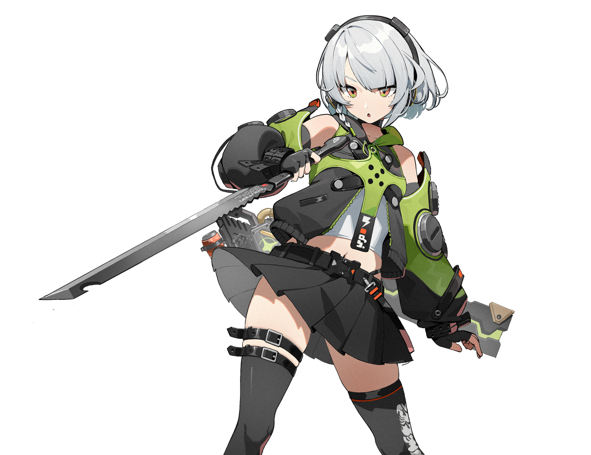
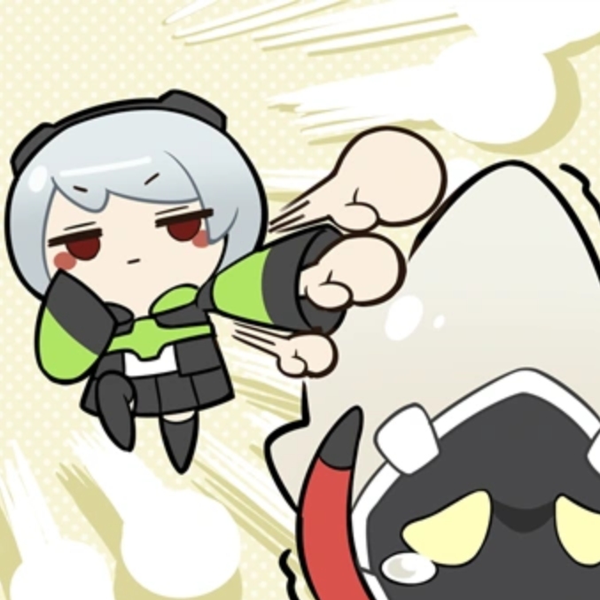
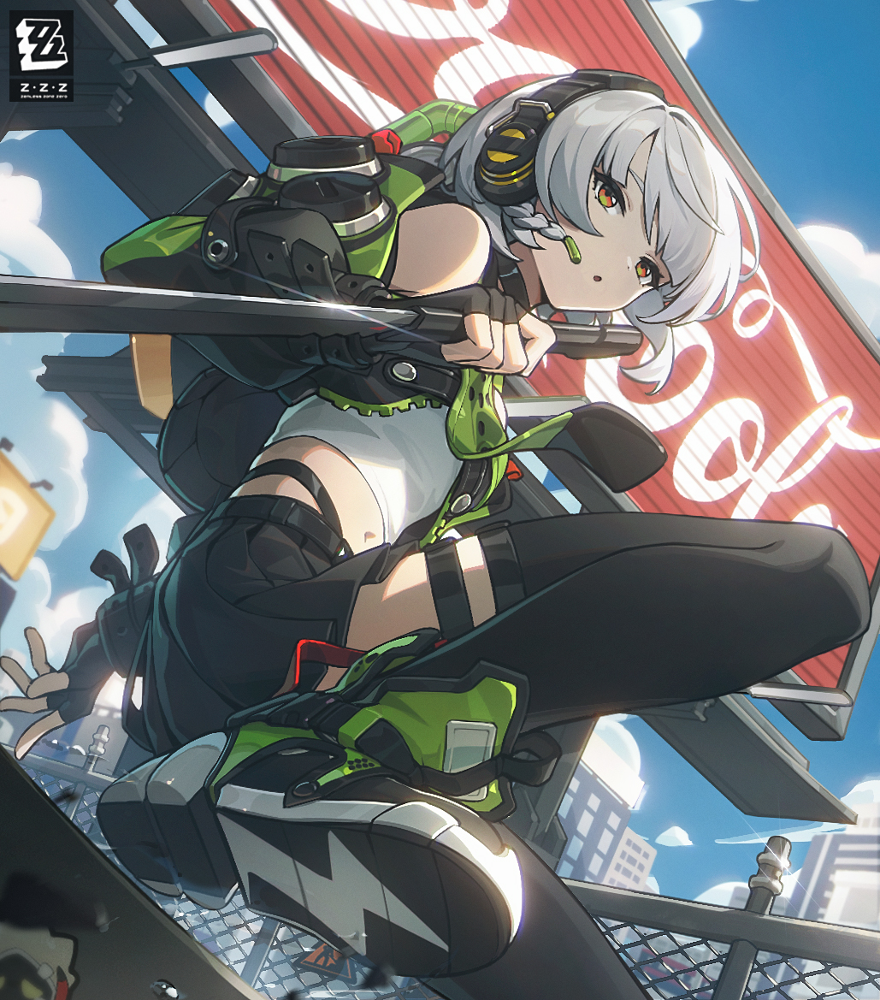
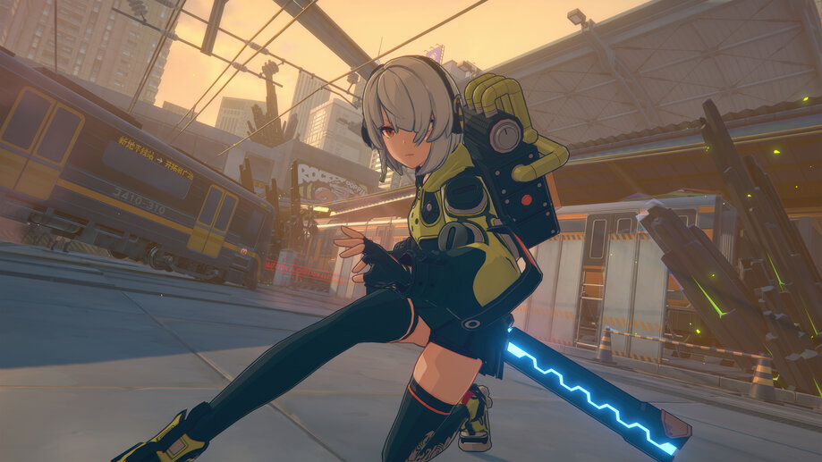

Энби Дерма

Энби Демара – персонаж A ранга из фракции "«Хитрые зайцы»". Специальность Агента – устрашение, наносимый тип урона электрический. Дата выхода персонажа 4 июля 2024 года - версия 1.0 Релиз игры.

Энби Демара — одна из самых спокойных и загадочных героинь Zenless Zone Zero. Она редко показывает эмоции и почти никогда не рассказывает о своём прошлом. Даже внутри «Хитрых зайцев» Энби выглядит человеком, который словно оказался «не на своём месте»: слишком дисциплинированная, слишком серьёзная и слишком хорошо обученная для обычной уличной команды. Несмотря на холодный характер, она сильно привязана к Николь и своей новой группе, считая их чем-то вроде семьи.

Внешний вид Энби тоже хорошо подчёркивает её характер. Она носит чёрно-белую одежду с жёлтыми элементами и короткую куртку в почти военном стиле. Её дизайн одновременно выглядит минималистично и технологично: ремни, крепления, массивные ботинки и оружие создают образ бойца, который привык к постоянным операциям. Но при этом Энби не выглядит агрессивной — скорее тихой и отстранённой. Даже её голос и манера говорить звучат спокойно, будто она всегда сохраняет контроль над ситуацией.

В бою Энби считается одним из лучших персонажей для оглушения врагов на ранних этапах игры. Она быстро накапливает эффект ошеломления и отлично помогает команде открывать противников для мощных атак союзников. Особенно хорошо Энби показывает себя в электрических командах и в быстрых ротациях. Однако игроки любят её не только за силу, а ещё и за стильные анимации, спокойную харизму и необычное поведение.